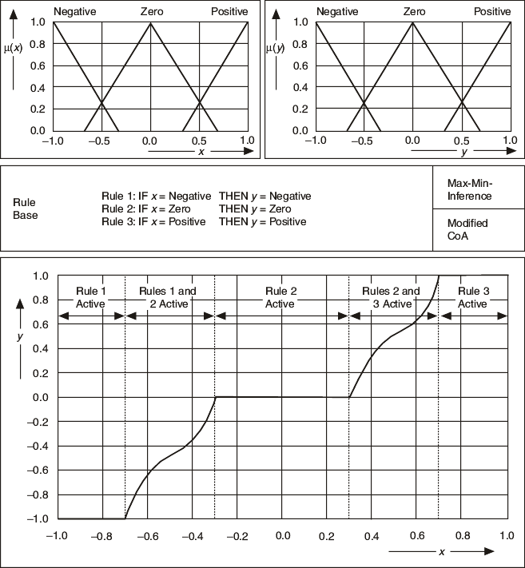

To illustrate how the I/O characteristics of a fuzzy controller depend on design parameters such as the rule base and membership function specifications of the fuzzy system, consider a single-input fuzzy controller. Many of the characteristics of a single-input fuzzy controller apply to fuzzy controllers with two or more inputs.
The following image shows the I/O characteristic of a fuzzy controller for a fuzzy system that has only three linguistic terms for the input variable x and the output variable y. The rule base consists of three rules, which indicate that the increasing input values cause the output value to increase.

The resulting controller characteristic shows nonlinear behavior. You obtain different intervals within the controller characteristic because the input linguistic terms partially overlap. The rule base has only one valid rule outside of the overlapping regions. The output therefore has a constant value determined by the output linguistic term of the output linguistic variable, which is independent of the degree of truth for that rule.
The overlapping sections of the antecedent terms lead to the rising intervals of the controller characteristic. Within these parts, two rules are simultaneously active. The different consequent terms, weighted by the degrees of truth of the different active rules, determine the output value. Notice that the overlapping triangular consequent terms cause the rising edges of the controller characteristic to be nonlinear.